Lecture 08 · 58 slides
Feed Forward Networks: where the transformer stores its knowledge.
Attention decides which tokens to look at. The feed forward
network — two-thirds of a modern transformer's parameters —
decides what to do once the tokens have been mixed.
This lecture starts with the position-wise FFN of the 2017
paper, walks through the gated variants that now dominate
(GLU, SwiGLU, GeGLU, SiTU-GLU), and ends with the biggest
bet of the 2020s: throwing away the dense FFN entirely and
replacing it with a Mixture of Experts.
Lecture 08
58 slides
Manish Shrivastava · Aparajitha Allamraju
§0The deck at a glance
The lecture has four movements. The first (slides 1–9) is a
careful rebuild of the plain FFN block from the 2017
transformer: what it looks like, where it sits, why it
matters, and why it swallows more than half of the model's
parameters. The second (10–19) is the whole gated-linear-unit
family — GLU, Bilinear, ReGLU, GeGLU, SwiGLU, and the brand-new
SiTU-GLU from Kimi K3 — plus a quick tour of activation
functions and the numerical trouble they can cause. The third
(20–30) argues that a static, dense FFN is wasteful and
introduces Mixture-of-Experts as the fix. The fourth (31–56)
is a deep pass through what makes an MoE actually work:
experts, routing algorithms, and the load-balancing loss.
Two closing tables (57–58) show the exact activation and
layer choices of every big transformer from GPT-1 to the
2.8T-parameter Kimi K3.
§1Where the FFN sits
Slides 1–9 do the setup. A transformer block alternates
attention and FFN, over and over. Attention is the part that
moves information across tokens; the FFN is the
part that transforms information within a single
token. Once you accept that split, the FFN is easy to
describe: it's an ordinary two-layer MLP applied
independently to every position in the sequence.
Slide 01 / 58
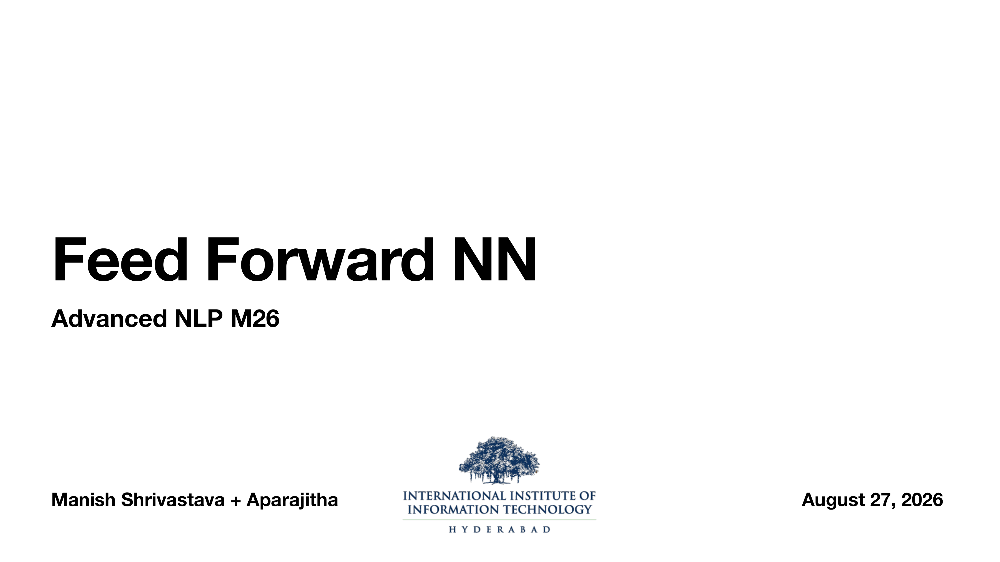
slide 01 · title
On the slide
Lecture 8 of Advanced NLP Monsoon 2026. The topic is the innocuously-named feed forward network
inside a transformer block — the part that is not attention, not normalization, not embedding.
Why give a whole lecture to it
Two reasons. Numerically, the FFN is where the majority of a transformer's parameters live (~57% for a
typical 1B-scale model — the next slide makes this precise). Conceptually, recent work suggests it is
where the model stores most of its knowledge: the attention layer moves facts around, but the
FFN is the giant key-value memory those facts live in. So although "feed forward" sounds like the
boring bit, the lecture is really about capacity, activations, and how to scale the block that holds the
model's actual world model.
Slide 02 / 58
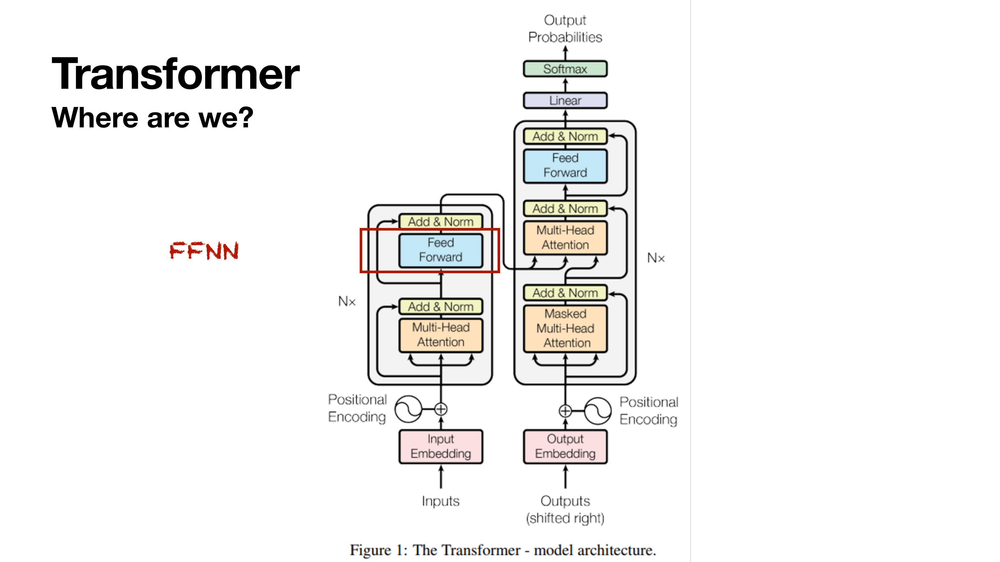
slide 02 · where the FFN lives in the block
On the slide
The canonical 2017 transformer diagram, with the encoder's Feed Forward sub-layer highlighted. Every
block goes Multi-Head Attention → Add & Norm → Feed Forward → Add & Norm, and this
pair is stacked N times.
What to take from it
Attention and FFN alternate. Attention lets each position peek at every other position; FFN then
transforms each position in isolation, using the same two-layer MLP applied position-wise.
That's it — no cross-token interaction inside the FFN. The alternation is the entire architecture: mix
tokens, then transform per-token, mix again, transform again. Both halves are needed. Without the FFN,
stacked attention layers collapse into one big linear function (slide 4 makes that argument formal).
Without attention, the FFN can't see the rest of the sentence at all.
Slide 03 / 58
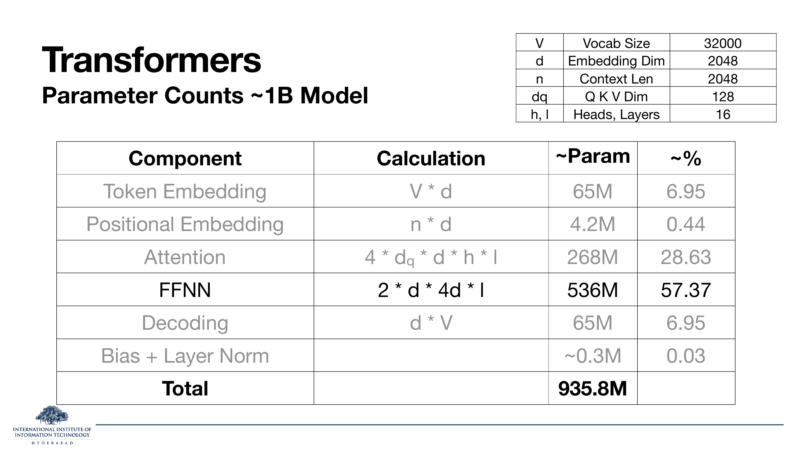
slide 03 · the FFN is the majority of the parameters
On the slide
A worked example of where parameters go in a ~1B parameter transformer. FFN alone is
57% of the total, more than double attention (~29%) and eight times the token
embedding (~7%). The formula behind the FFN row is
— two weight matrices per layer, each of shape d × 4d, over l layers.
Why the "4d" convention exists
The 2017 paper picked a hidden dimension of 4d for the FFN — four times the model
dimension — and everyone kept the convention. It's a deliberate expansion: project up to
a wider space, apply a nonlinearity there, project back down. Ratios larger than 4 don't buy much;
smaller ratios lose expressiveness. That single ratio is why the FFN dwarfs attention in parameter
count: attention has O(d2) weights per layer, FFN has O(8d2).
When someone talks about "growing the model", they usually mean growing 4d.
✦ Key takeaway
Every optimisation you do to the FFN — a cheaper activation, a smarter matrix shape, a mixture of
experts — is applied to the largest single chunk of your model. This is why FFN research is
the highest-leverage part of transformer engineering.
§2What the FFN actually is
Slides 4–9 rebuild the FFN from scratch: why it exists at all
(adds nonlinearity), what a plain MLP looks like (input →
hidden → output), and finally the exact formula used inside
a transformer block.
Slide 04 / 58
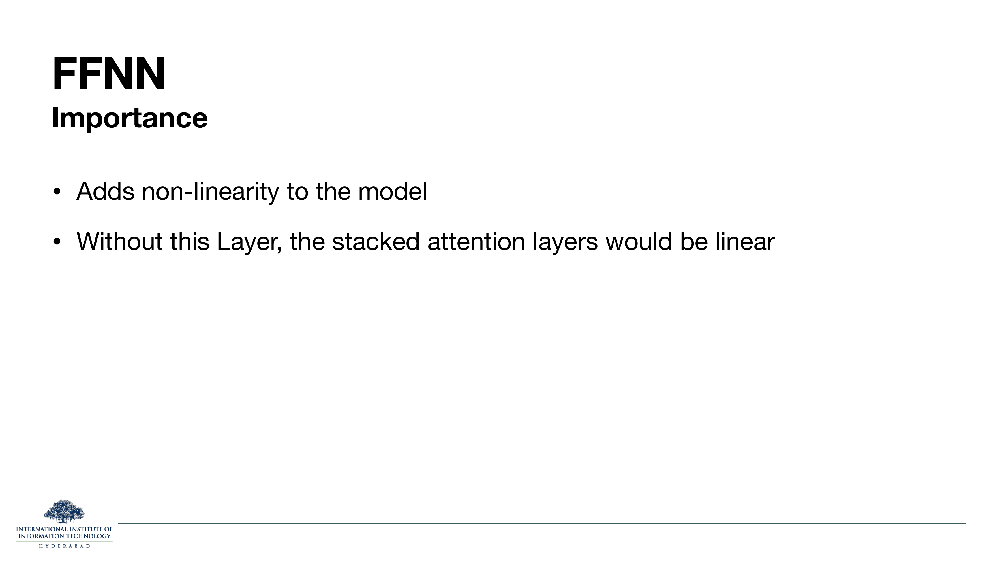
slide 04 · why the FFN is there at all
On the slide
Two sentences. The FFN adds nonlinearity to the model; without it, stacked attention would collapse
to a single linear map.
Why "linear stacked = linear" matters
Attention itself is a series of linear projections (Q, K, V, output) with one non-linear step —
softmax on the attention scores. But the softmax operates on the attention weights, not the
residual stream. If you stack ten attention blocks with no FFN in between, the residual stream just
gets multiplied by ten more linear layers, and the whole composition is again linear. Linear
functions can't approximate anything interesting no matter how many you stack: they can't do XOR,
can't do arithmetic, can't do language. The FFN's ReLU (or GELU, or SwiGLU) is what breaks that
linearity and lets the network learn actual functions.
Under the hood
The nonlinearity is applied inside the FFN, between its two linear layers. So each block's
pattern is: attention (mostly linear on the residual stream) → residual add → FFN (linear × nonlinearity
× linear) → residual add. The FFN is the block's one guaranteed source of nonlinear expressiveness.
Slide 05 / 58
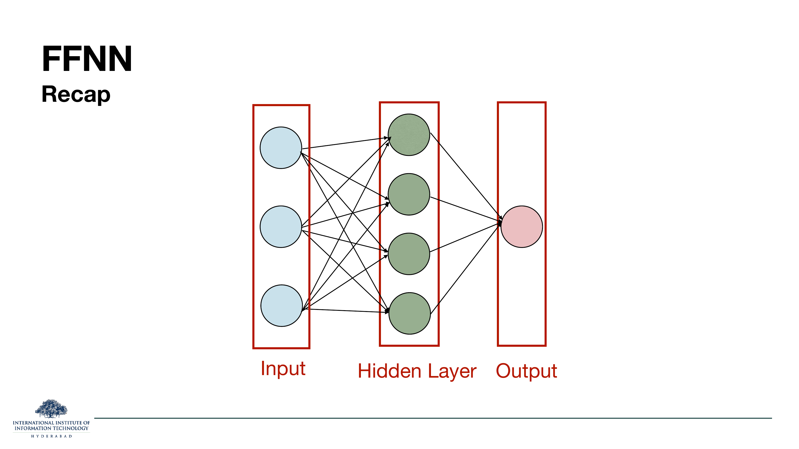
slide 05 · MLP recap, in a picture
On the slide
The classic MLP diagram. Three inputs, one hidden layer of four neurons, one output. Every input
connects to every hidden neuron; every hidden neuron connects to the output. That's what "fully
connected" means.
What to take from it
The FFN in a transformer is literally this — a plain two-layer MLP — with one extra convention: the
hidden layer is 4× wider than the input (see slide 3). Nothing exotic. The lecture spends the next
five slides just writing this picture as an equation, so it's worth internalising: an FFN is not a
new object, it's the oldest neural network in the book, applied per token.
Slide 06 / 58
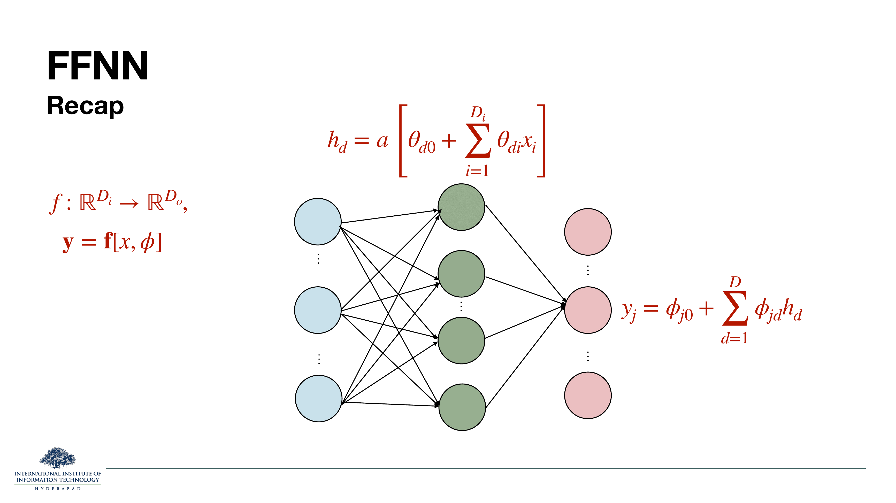
slide 06 · MLP recap, in equations
On the slide
The picture from slide 5, rewritten as equations. Each hidden unit
is an activation
applied to a weighted sum of inputs plus a bias. Each output
is a weighted sum of the hidden units.
What each symbol means
- Di is the input dimension, Do the output dimension,
D the hidden width.
- The θ weights parametrise the first (input → hidden) linear layer; the φ
weights parametrise the second (hidden → output).
- The 0 subscript on
is the bias.
The next slide isolates the one symbol that decides the character of the whole network: the
activation
.
Slide 07 / 58
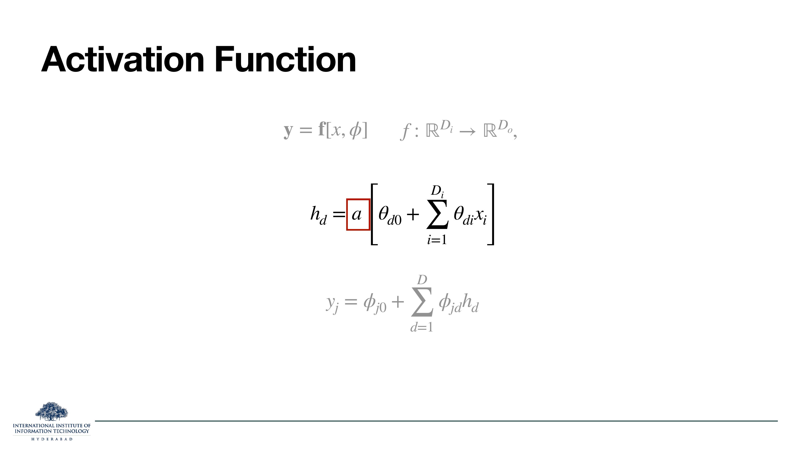
slide 07 · the one symbol that changes the network's character
On the slide
The activation
is boxed. Everything else in the FFN is a linear operation.
Which nonlinearity you pick — sigmoid, tanh, ReLU, GELU, Swish, or any of the gated variants coming up
in §2 — is the design decision.
Why this matters more than it looks
The two matrix multiplies are boring; they're what every layer does. The activation is what breaks
linearity and it's also what breaks the gradient. A saturating activation (sigmoid, tanh) shrinks
gradients toward zero away from the origin and gives you vanishing-gradient problems in deep stacks.
A non-saturating one (ReLU, GELU) keeps gradients alive but has its own failure modes (dead ReLUs,
activation spikes — see slide 19). Fifteen years of activation-function research is just the story
of picking a curve that lets gradient descent finish before it dies.
Slide 08 / 58
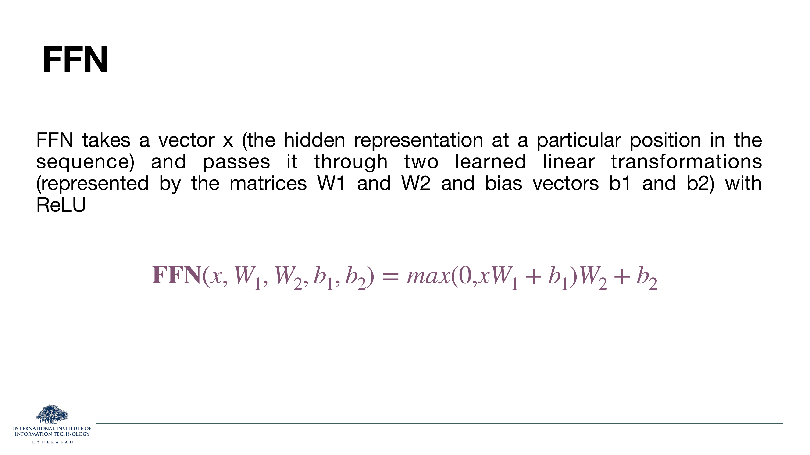
slide 08 · the position-wise FFN of the 2017 transformer
On the slide
The exact FFN block from the original transformer. Take one token's hidden vector
x, multiply by
, add bias
, apply ReLU (max with zero), multiply by
, add bias
. That's the whole block.
Why "position-wise"
The same two matrices are applied to every token position — no matter how long the
sequence, no matter which position in it. So each token is transformed independently, using the same
learned parameters. If your sequence has 2048 tokens, you run the FFN 2048 times per layer with the
same weights. That's why FFN cost scales linearly with sequence length, unlike attention which scales
quadratically. It's also why "position-wise" is really a stronger claim: the FFN cannot see other
positions at all. It can only reshape the information that attention has already gathered into this
one token's slot.
✦ Key takeaway
Read the transformer block as a two-step algorithm: attention gathers context into each token
vector, then the FFN thinks about that token. The FFN is the "thinking" step; it
just happens per token.
Slide 09 / 58
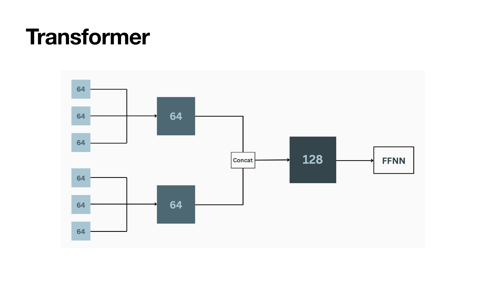
slide 09 · how the FFN plugs in after multi-head attention
On the slide
A little sketch of the data flow. Multi-head attention produces several 64-dimensional head outputs;
they are concatenated to form the full 128-dimensional hidden state; that hidden state is what the FFN
receives.
What to take from it
The FFN doesn't "know" that its input came from attention heads. From its point of view the input is
just a d-dimensional vector per token. Whatever structure the different heads captured has
already been flattened into one long vector by the time the FFN sees it. That's part of why increasing
the FFN width (or number of experts, in §5) is such an effective knob: the FFN is the single place
where the model has room to interpret the concatenated multi-head signal.
§3Gated Linear Units: the FFN block gets a gate
Slides 10–16 replace ReLU with a family of gated variants.
The idea, borrowed from LSTM and GRU cells: instead of just
"apply a nonlinearity to the up-projection", compute a
gate from the input and multiply the up-projection by it.
A learnable, input-dependent filter. The star of the family
is SwiGLU (Swish gate), which is what LLaMA, Mistral, Gemma,
Qwen, and DeepSeek all use today.
Slide 10 / 58
slide 10 · section marker — Gated Linear Units
On the slide
A section break. The next six slides are all about the GLU family.
Why now
The original 2017 FFN uses ReLU. In 2020 Noam Shazeer published a one-page paper ("GLU Variants
Improve Transformer") showing that swapping ReLU for a gated variant like SwiGLU gave a consistent
improvement in language-modelling perplexity for the same parameter count. The result was so clean
that within three years every major open LLM had switched. This section is that switch, worked out
from first principles.
Slide 11 / 58
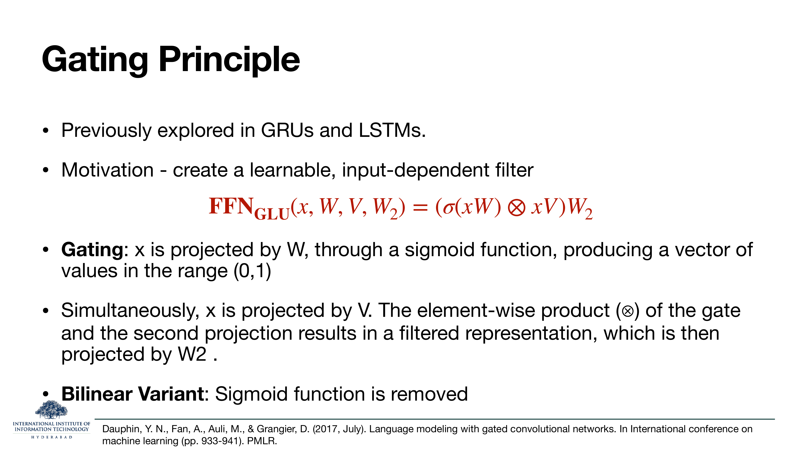
slide 11 · the gating principle
On the slide
The GLU formula:
. Read the middle bit as two branches:
- Gate branch: project x through W, squash through a sigmoid.
Every entry is now in (0, 1) — a soft on/off switch.
- Value branch: project x through a second matrix V, no
nonlinearity.
- Multiply the two element-wise (⊗). Where the gate is close to 0 that entry is suppressed; where
the gate is close to 1 the value passes through.
- Project the filtered result back down through
.
Why this generalises ReLU
In the plain ReLU FFN, the "gate" is a hard threshold on the up-projection itself: negative entries
are zeroed, positive ones pass unchanged. GLU keeps that gating idea but computes the gate from a
separately projected version of the input. The gate isn't a fixed function of the up-projected
value; it's a learnable, input-dependent decision about which channels should fire. A
Bilinear variant drops the sigmoid entirely — the gate is just xW — and works too,
which tells you the win doesn't hinge on the specific squashing function.
Under the hood
Think of it as attention over channels of your own hidden state. Each channel gets its own vote (the
gate) on whether the value on that channel should pass. Because both the gate and the value are
computed from the same x, the network can decide per-token which features are relevant.
Slide 12 / 58
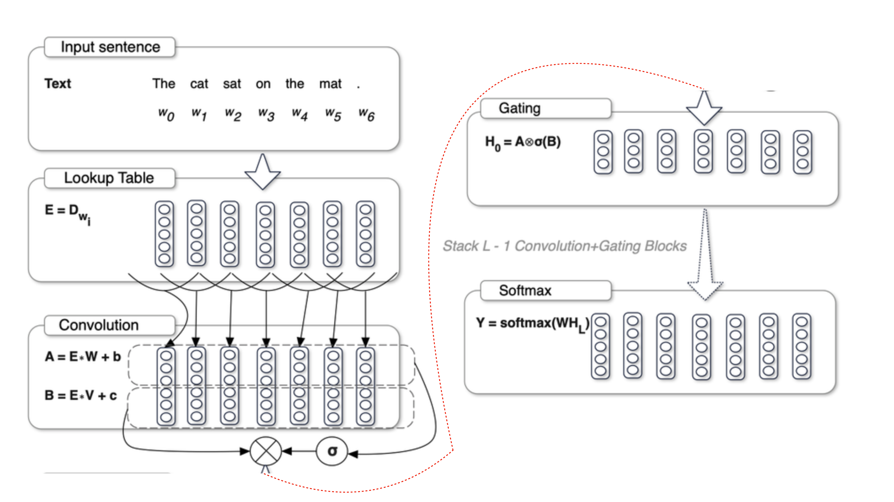
slide 12 · where the gate idea came from — gated CNNs
On the slide
A diagram from Dauphin, Fan, Auli & Grangier (2017), the first paper to use this
gated-linear-unit shape in a language model — as a convolutional block, not yet inside a transformer.
Two parallel projections A and B are combined as A ⊗ σ(B).
Why the historical detour matters
Before the GLU became a transformer component, it was already known to work in convolutional language
models. That gave Shazeer (2020) a strong prior that dropping the same primitive into a transformer's
FFN would work — the paper isn't a blind guess, it's transferring a known-good trick to a new
architecture. This is a general pattern in deep-learning research: a component that helps in one
architecture usually helps in another as long as the underlying computation (in this case: gated,
input-dependent feature selection) is what you needed.
Slide 13 / 58
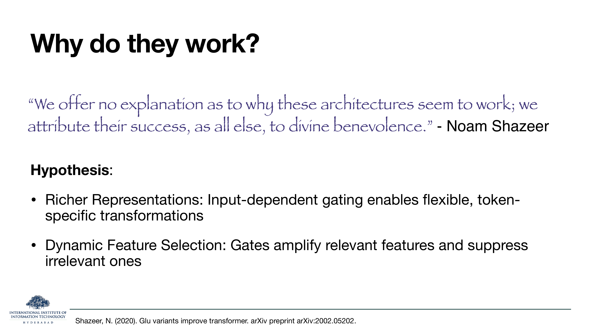
slide 13 · why GLUs work — no one really knows
On the slide
The famous Shazeer disclaimer: "We offer no explanation as to why these architectures seem to
work; we attribute their success, as all else, to divine benevolence." Below it, a two-bullet
hypothesis: gates make representations richer and let the model select features dynamically.
Reading the joke seriously
The joke is honest: Shazeer's paper showed a consistent perplexity win on language modelling but did
not derive why from any principle. In practice, the current best-guess story is the two
bullets on the slide — a gate lets the network choose per-token which features to activate, which is
strictly more expressive than a fixed pointwise nonlinearity. It's the same reason attention beats a
fixed convolution. But no one has a proof that this is why the win exists, and it's normal in ML for
a component to be adopted years before its theory catches up.
Slide 14 / 58
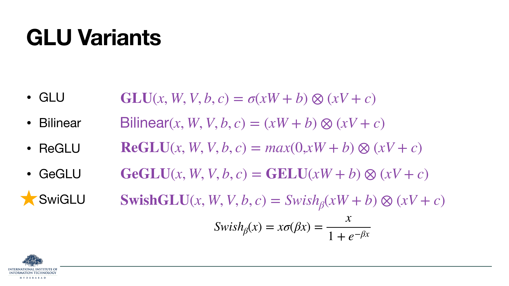
slide 14 · the GLU family in one table
On the slide
Every GLU has the same skeleton — gate ⊗ value, then a down-projection. Only the
gate's nonlinearity changes:
- GLU: sigmoid gate. The original.
- Bilinear: no gate nonlinearity at all. Just a product of two linear projections.
- ReGLU: ReLU gate.
- GeGLU: GELU gate. Used by mT5-L.
- SwiGLU: Swish gate,
.
The star of the family — used by LLaMA, Mistral, Gemma, Qwen, DeepSeek. When someone says "modern
LLM" in 2025+, they mean SwiGLU FFNs.
Why Swish/GELU won over ReLU
Both Swish and GELU are smooth around zero, unlike ReLU's hard corner. That smoothness gives cleaner
gradients right where most inputs sit (activations tend to be small after LayerNorm), and empirically
produces a small but real drop in language-modelling loss. The plots on slide 15 show how similar
these three curves actually are — the differences are subtle and worth staring at.
✦ Key takeaway
All GLU variants have the same computational shape. If you know the plain FFN formula and you know
the shape gate ⊗ value → W2, you know every one of them. The only real choice is
the gate function.
Slide 15 / 58
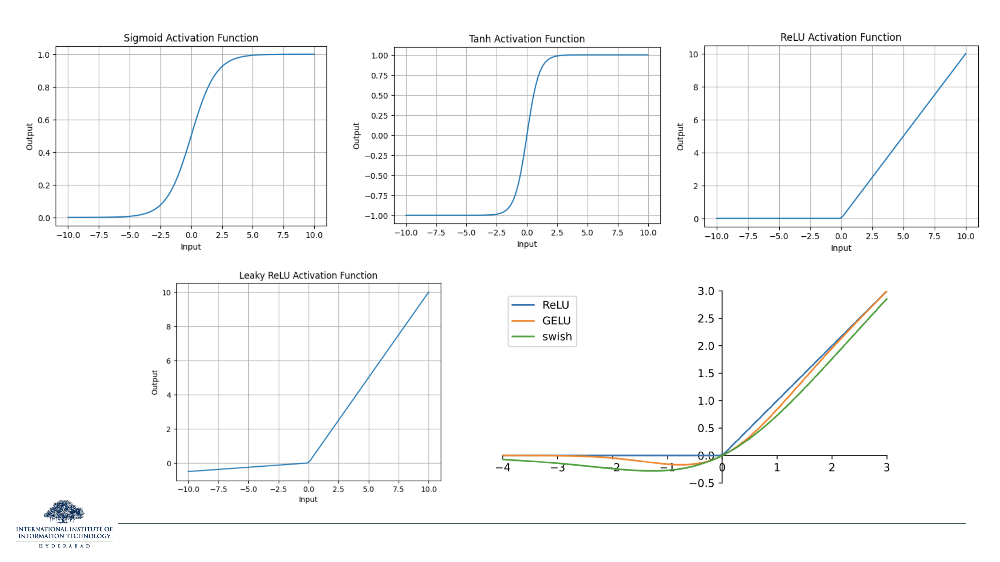
slide 15 · the activation-function tour
On the slide
Plots of the classical activations. Sigmoid and Tanh saturate at both ends — where the curve is flat,
the gradient is essentially zero, which is what causes vanishing gradients in deep sigmoidal networks.
ReLU and its "Leaky" cousin don't saturate on the positive side, which is why they let deep networks
train at all. The bottom-right compares ReLU, GELU, and Swish head-to-head near the origin.
What to notice in the last panel
ReLU, GELU, and Swish are almost the same function for x > 0 — they're all approximately
the identity there. The only real difference is a small negative dip in GELU and Swish around
x ≈ −1, where ReLU would output zero. That tiny "leak" is the whole reason GELU and Swish
tend to win: they let a small negative gradient flow through, avoiding the "dead ReLU" failure where
a unit's inputs all go negative and the gradient vanishes forever. Empirically the difference between
GELU and Swish is smaller than the difference between either and ReLU.
Slide 16 / 58
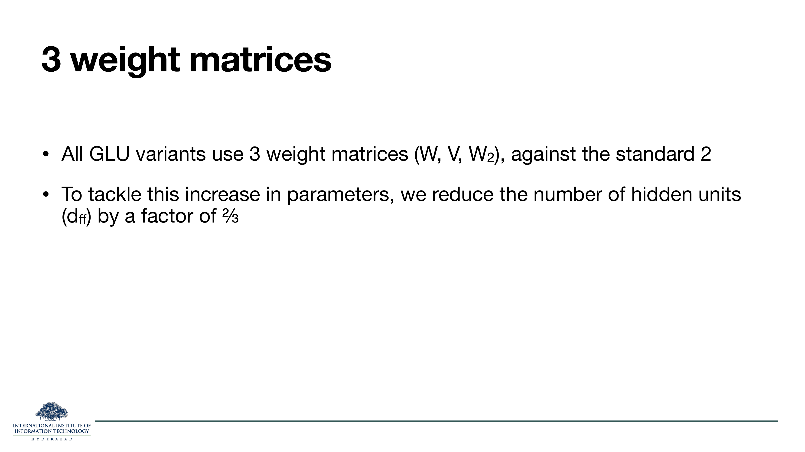
slide 16 · the 2/3 hidden-width trick
On the slide
A parameter-count reconciliation. A plain FFN has two weight matrices
(,
). A GLU FFN has three (W, V,
). To keep the parameter count roughly equal, shrink the hidden width
by a factor of 2/3.
Where 2/3 comes from
Simple algebra. A standard FFN with hidden width 4d has parameter cost
2 · d · 4d = 8d2. A GLU FFN with hidden width
has cost 3 · d ·
. Setting these equal gives
= (8/3)d ≈ 2.67d, which is exactly (2/3) · 4d. So a fair SwiGLU-vs-ReLU
comparison uses hidden width ≈ 2.67d for SwiGLU vs 4d for ReLU. Every reported
SwiGLU win in the literature includes this correction — the win isn't "we added parameters", it's
"same parameter budget, gated architecture wins".
⚠ Watch out
If you code a SwiGLU FFN and forget the 2/3 factor, you accidentally inflate the model by ~50% in
the FFN block. Any "SwiGLU beats ReLU" claim without this correction is meaningless.
§4SiTU-GLU and activation spikes: the 2026 refinements
Slides 17–19 introduce a brand-new variant (SiTU-GLU, from
Kimi K3) that adds a soft cap to keep activations bounded,
then explains the numerical problem it exists to solve —
activation spikes that break post-training quantisation.
Slide 17 / 58
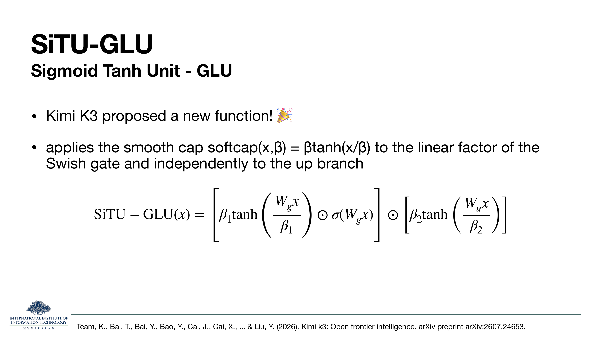
slide 17 · SiTU-GLU formula (Kimi K3, 2026)
On the slide
Kimi K3's new activation. The softcap
is applied to both the gate's linear factor and the value branch. That's what "SiTU" (Sigmoid Tanh
Unit) refers to — the gate still uses sigmoid, but the input to the sigmoid is first passed through a
tanh-based soft cap.
What the softcap does
For small x, tanh(x/β) ≈ x/β, so
≈ x. The block behaves like SwiGLU in the normal range. But as |x| grows, the tanh
saturates and the output tops out at ±β. So each branch is bounded by β, and the whole SiTU-GLU output
by β1β2. It's SwiGLU with a soft ceiling.
Slide 18 / 58
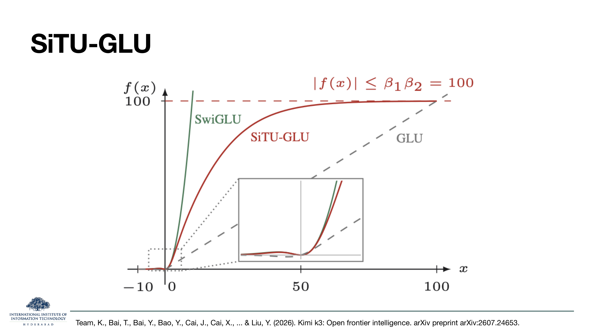
slide 18 · SiTU-GLU in a picture
On the slide
SwiGLU shoots off the top of the plot for large positive x — it has no bound. Plain GLU is
approximately linear. SiTU-GLU asymptotes at |f| ≤ β1β2 = 100 (in
Kimi's setting).
Why bounded output matters
Look at the inset near x = 0: SiTU-GLU and SwiGLU are indistinguishable there. That's the
point. The soft cap only kicks in at extreme values that empirically cause the numerical trouble on
the next slide. In the range that carries actual signal, SiTU-GLU behaves exactly like SwiGLU.
✦ Key takeaway
SiTU-GLU = SwiGLU + safety belt. Same behaviour in the working range; bounded at the extremes.
Almost a free upgrade.
Slide 19 / 58
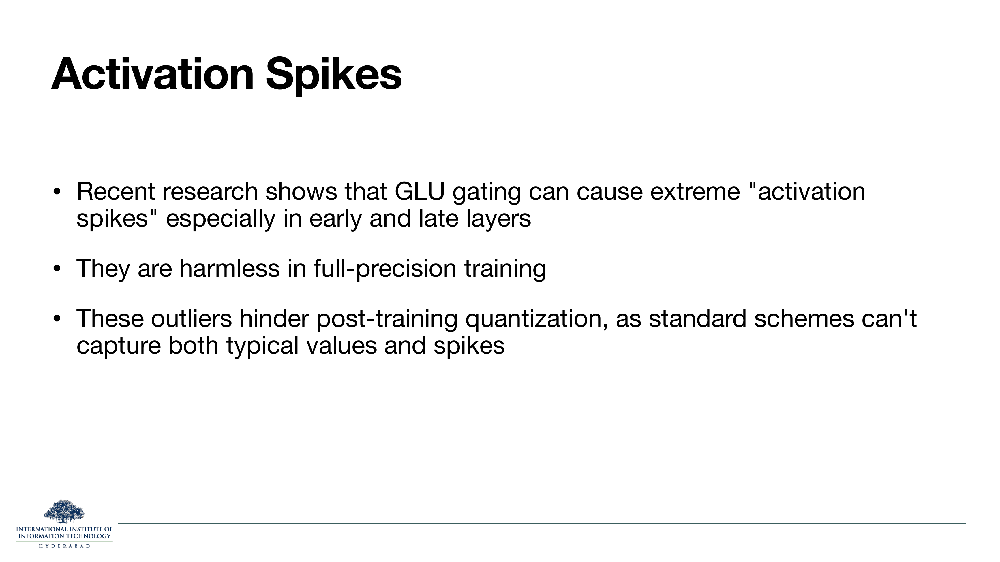
slide 19 · the problem SiTU-GLU exists to fix
On the slide
Three sentences describing why the soft cap on the previous slide matters. GLU-style gating produces
occasional extreme activations — activation spikes — especially in early and late layers of
the transformer. In FP32 or BF16 training this is harmless. But when you try to quantise the model
post-training (to INT8 or INT4 for cheap inference), the huge outliers force the quantisation range
to be very wide, and the typical values collapse to a few bits of precision.
The full picture
Quantisation works by mapping a continuous range to a small number of buckets. If your activations
are usually in [−3, 3] but occasionally spike to ±100, you have to choose the [−100, 100] range for
your quantisation grid, which means the typical [−3, 3] range gets squeezed into 6/200 = 3% of the
grid — awful precision. Bounding the activations (SiTU-GLU) means the quantisation range stays
small, the typical values get full precision, and INT8 inference just works. This is a great example
of how downstream deployment requirements (int8 quantisation) reach back and change the model
architecture.
→ Trend to watch
Almost every new frontier LLM (Kimi K3, DeepSeek V3/R1, Qwen3) is designed with post-training
quantisation in mind. Architectural choices — soft caps, QK-Norm, careful init scales — are being
driven by "what do we need so INT8 inference doesn't crash". Model-quality wins are secondary; the
real prize is a model that fits on a customer's GPU.
§5From dense FFN to Mixture of Experts
Slides 20–30 argue that the dense FFN — the same weights
applied to every token — is fundamentally wasteful, and
introduce the fix: a Mixture of Experts (MoE)
layer that keeps many parallel FFNs but activates only a
few of them per token. This is the single biggest
architectural shift in transformer research since 2020.
Slide 20 / 58
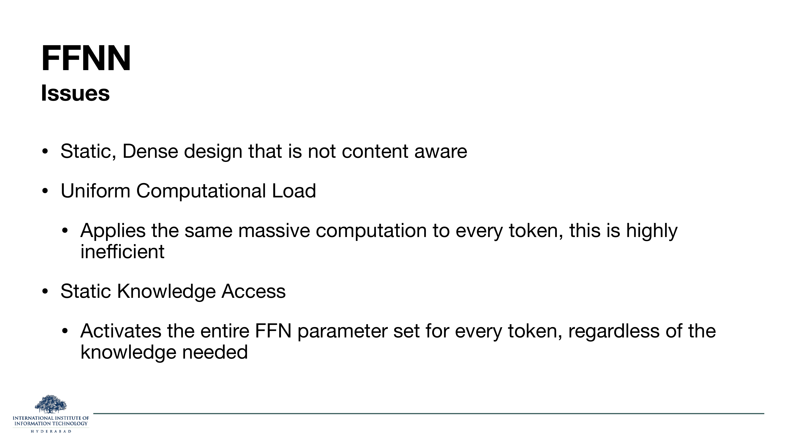
slide 20 · what's wrong with the dense FFN
On the slide
Three problems with the plain FFN. It's static (same weights for every input),
uniform (same amount of compute per token, regardless of difficulty), and its knowledge
access is global (every parameter is touched by every token).
Why these are wasteful
Consider the token "the". It carries almost no semantic content and shouldn't need the same
billion-parameter transformation as the token "quantum" in "quantum entanglement". Yet the plain FFN
runs the full computation for both, using every neuron in the 4d-wide hidden layer. If most
neurons are only relevant to a small subset of inputs — which activation-sparsity studies suggest is
true — you're paying full FLOPs to compute mostly zeros. The next slide names the fix.
Slide 21 / 58
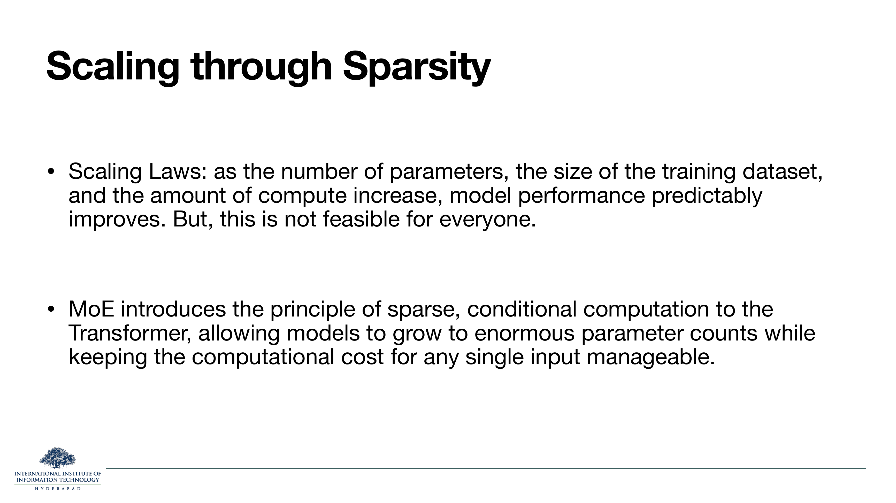
slide 21 · why sparsity is the answer
On the slide
Two facts. First, more parameters give better models (scaling laws). Second, most people can't afford
to run every parameter for every input. MoE resolves the tension: build a huge model, but only
activate a small fraction of it for any given token.
The precise trick
Split the FFN into N smaller FFNs (experts). For each token, a small router
picks K ≪ N of them and only runs those. Total parameter count grows with N
(great — more capacity, more knowledge). Compute per token grows with K (~constant — same
price per input). DeepSeek V3 has 671B parameters but activates only 37B per token; Kimi K3 has 2.8T
parameters and activates 104B. That's the whole pitch.
Slide 22 / 58
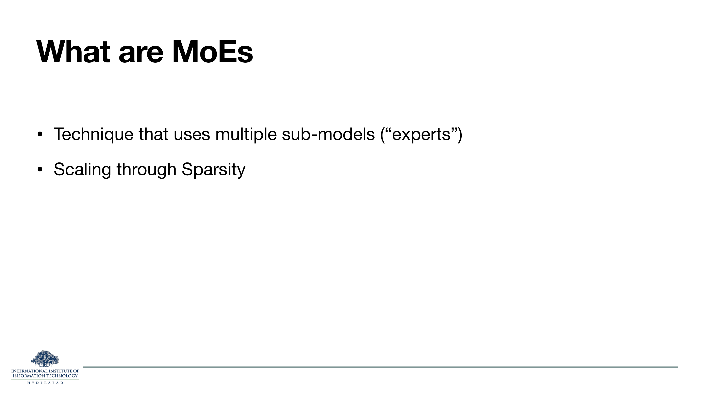
slide 22 · MoE, in two bullets
On the slide
The one-line definition. An MoE is a technique that uses multiple sub-models called experts,
gated so that only a subset is used for each input. Slide 21 already gave the "why".
What "expert" means (and doesn't)
Don't take the name too seriously. An expert is not a hand-designed module for a specific subject; it
is just one of N identically-shaped FFNs in a layer. Whether an expert becomes "the numbers
expert" or "the punctuation expert" is emergent — it happens during training, and slides 35–36 show
real examples. The word "expert" is basically shorthand for "one of the parallel FFN heads that the
router might pick from".
Slide 23 / 58
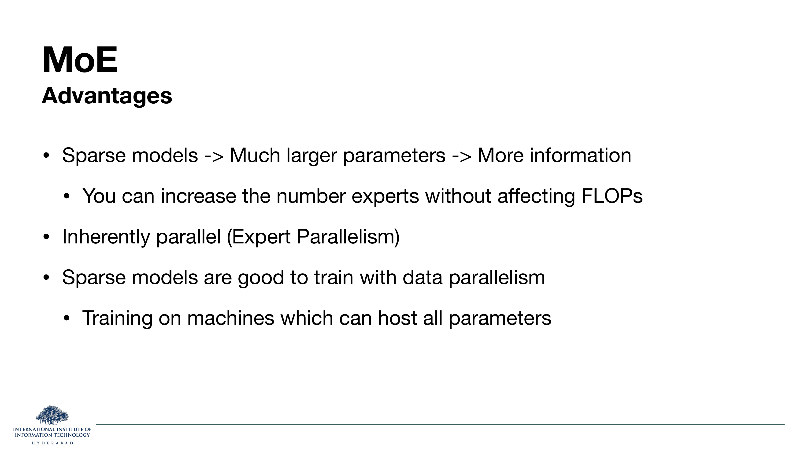
Much larger parameters -> More information. You can increase the number of experts without affecting FLOPs. Inherently parallel (Expert Parallelism). Sparse models are good to train with data parallelism, on machines which can host all parameters.">
slide 23 · MoE advantages
On the slide
Three practical advantages: (1) more parameters for the same FLOPs, (2) experts are naturally
parallelisable (put each expert on a different GPU), (3) training with mixed data/expert parallelism
scales well when your cluster can fit all the parameters somewhere.
Why the FLOP argument is subtle
Adding experts is free in FLOPs per token as long as you keep K (number of active
experts) fixed. If you go from 8 experts to 128 experts but still activate 2 per token, the FLOP cost
per token is unchanged; only memory increases (you have to store all 128, even if you use
only 2 at a time). That's why MoE models tend to be memory-limited rather than compute-limited on
inference — a fundamentally different scaling regime than dense models.
Slide 24 / 58
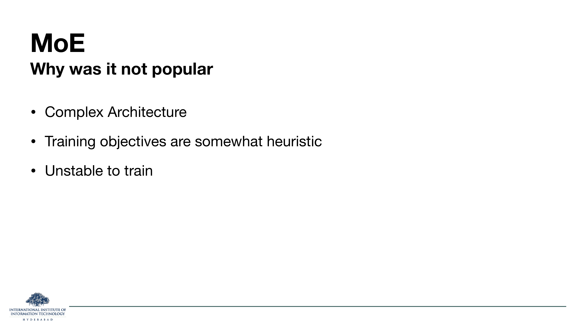
slide 24 · why MoE took a decade to catch on
On the slide
Three reasons MoE spent most of the 2010s in the "cute idea, doesn't work in practice" pile: the
architecture is complicated, the training objectives (load-balancing, auxiliary losses) are heuristic,
and until recently MoE models were notoriously unstable to train.
What changed
Google's Switch Transformer (2021) and GShard (2020) demonstrated MoE working reliably at massive
scale. Then DeepSeek V2/V3, Mixtral, and Qwen3 showed the same approach works for open-source
language models. The training instability has been reduced by the tricks we'll see in §7 (auxiliary
losses) and §8 (load-balancing). MoE is now the default for frontier models — the last three years'
worth of top-of-leaderboard open-weight models are almost all MoE.
Slide 25 / 58
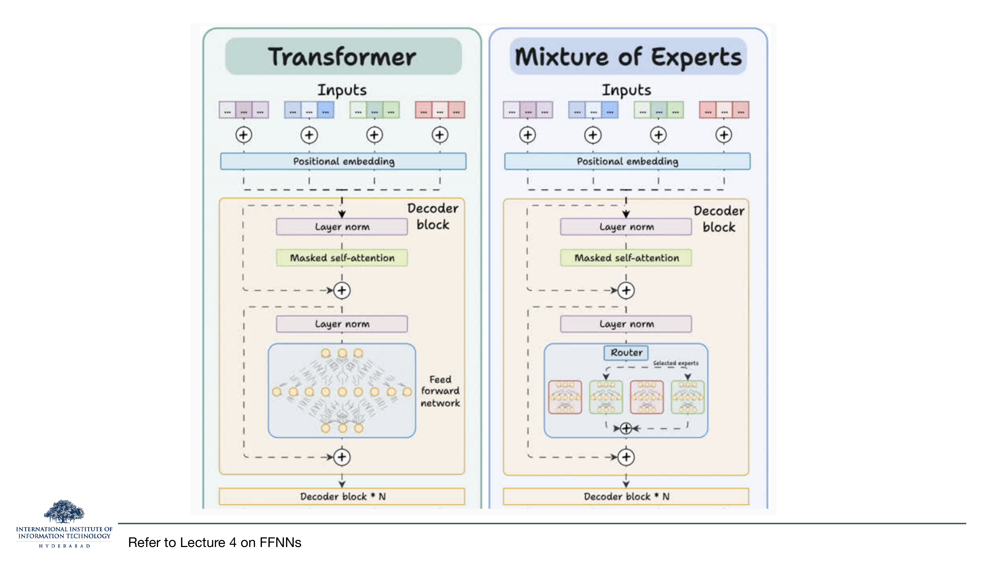
slide 25 · transformer vs Mixture-of-Experts, in a picture
On the slide
Two decoder blocks drawn side by side. They are identical everywhere except the FFN. Where
the plain transformer has one dense feed-forward network, the MoE version has a router
followed by several parallel expert FFNs, of which only the selected ones ("Selected experts") run.
What to notice
Attention, normalization, residual connections, and the block structure all stay the same. MoE is a
drop-in replacement for the FFN block only. That's why it's so easy to convert a dense model to MoE
(or vice versa): everything before and after the FFN stays put. The MoE change is entirely
local — one sub-layer swap.
Slide 26 / 58
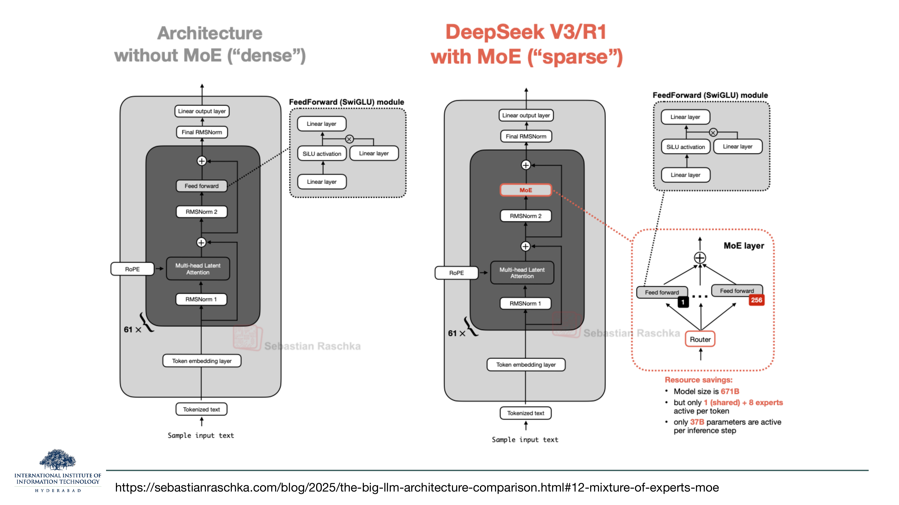
slide 26 · a concrete example — DeepSeek V3 dense vs sparse
On the slide
The same comparison as slide 25, but drawn against a real production model — DeepSeek V3/R1. Left:
the dense architecture (Multi-head Latent Attention + SwiGLU FFN). Right: the MoE version, where the
FFN is replaced by 256 expert FFNs plus 1 shared expert. Only 8 of the 256 routed experts (plus the
shared one) are activated per token.
The numbers on the slide
DeepSeek V3's dense parameter count is 671B, but only 37B parameters
are used per inference step. That's ~18× fewer active parameters than total. The savings are enormous:
you get the capacity of a 671B model with the compute of a 37B model. That's the whole reason companies
are betting hundreds of millions of GPU-hours on MoE architectures.
✦ Key takeaway
MoE's win is not "the model is smarter"; it's "the model has more capacity per unit of compute". You
store more, activate less. Great for open-weight distribution (people can host huge models on
consumer hardware), great for cloud economics (more cache hits, less bandwidth).
Slide 27 / 58
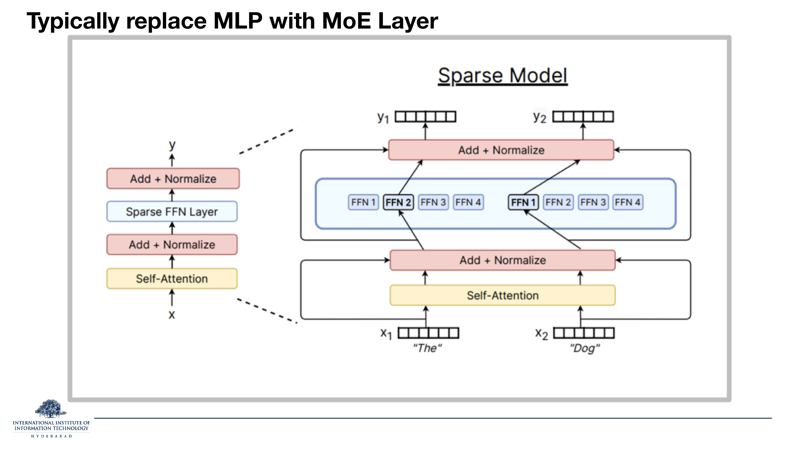
slide 27 · MoE replaces the FFN, not attention
On the slide
A clearer visual of what "replace MLP with MoE" means. Two tokens (The and Dog)
enter the layer; the router assigns each token to a different expert; only the chosen expert's FFN
runs.
What to internalise
Routing is per token, not per sequence. Every position in the sequence gets its own routing
decision. Two adjacent tokens in the same sentence can be sent to completely different experts. That's
the finest granularity of specialisation the block supports.
Slide 28 / 58
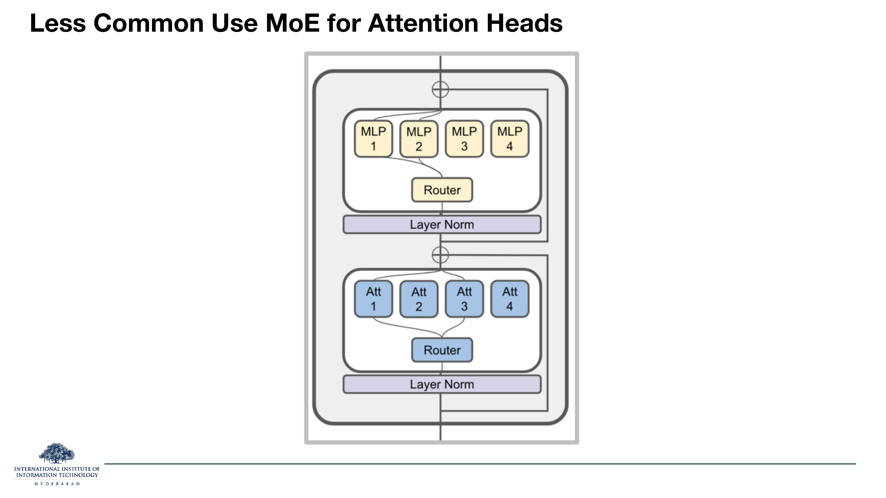
slide 28 · MoE for attention heads too (rare)
On the slide
A rarer variant: apply the mixture-of-experts idea to attention heads as well as to FFNs. The router
picks a subset of attention heads for each token, not just a subset of FFNs.
Why this hasn't caught on
Two reasons. First, attention heads are already parameter-cheap compared to FFNs (recall from slide 3
that attention is ~29% of total parameters, FFN is ~57%), so the payoff for making attention sparse
is smaller. Second, routing attention heads breaks the assumption that every position attends to
every other with the same head structure, which makes the KV-cache and inference plumbing much
messier. So in production models MoE almost always means "MoE-FFN", and attention stays dense.
Slide 29 / 58
slide 29 · the three moving parts of an MoE
On the slide
An MoE has three ingredients, and the rest of the lecture is one section per ingredient:
- Experts (§6): the parallel FFNs themselves. What do they learn, and how do we
design them?
- Router / Gate (§7): the little network that decides which expert(s) each token
goes to.
- Load Balancer (§8): the auxiliary loss that stops one expert from hogging every
token while others starve.
What to take from it
The router is the hard part. Experts are just FFNs; load balancing is one extra loss term. But
routing is a discrete decision (which expert?), which means you can't backprop through it directly,
and you have to invent tricks (softmax-with-noise, straight-through estimators) to train it at all.
§7 is where the technical difficulty lives.
Slide 30 / 58
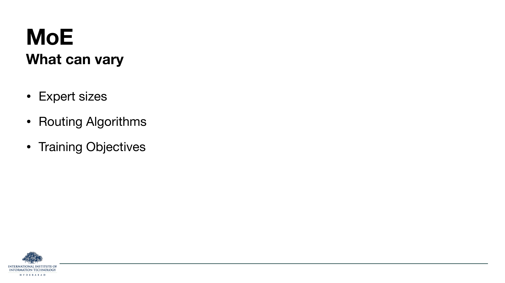
slide 30 · MoE design axes
On the slide
Three knobs when you design an MoE: how big each expert is (many small vs few large), the routing
algorithm (top-K, hash, RL — see §7), and the training loss (do you add an auxiliary balancing loss,
a capacity penalty, etc.).
What the field has converged on
The current default: many small experts (256+ in DeepSeek, 512+ in Qwen 3.5), top-K
routing with K = 8, and an auxiliary load-balancing loss. Deviations from this exist,
but if you're just starting an MoE project this is the recipe you inherit.
§6Experts: what do they actually learn?
Slides 31–39 focus on the first ingredient. What does an
expert become during training? Are there "verb experts" and
"noun experts"? The answer is yes, sort of, but the
specialisation is messier than you might expect. Two
modern refinements — shared experts and fine-grained
experts — get their own slides.
Slide 31 / 58
slide 31 · section marker — Experts
On the slide
Section break. The next nine slides are about the experts themselves.
Slide 32 / 58
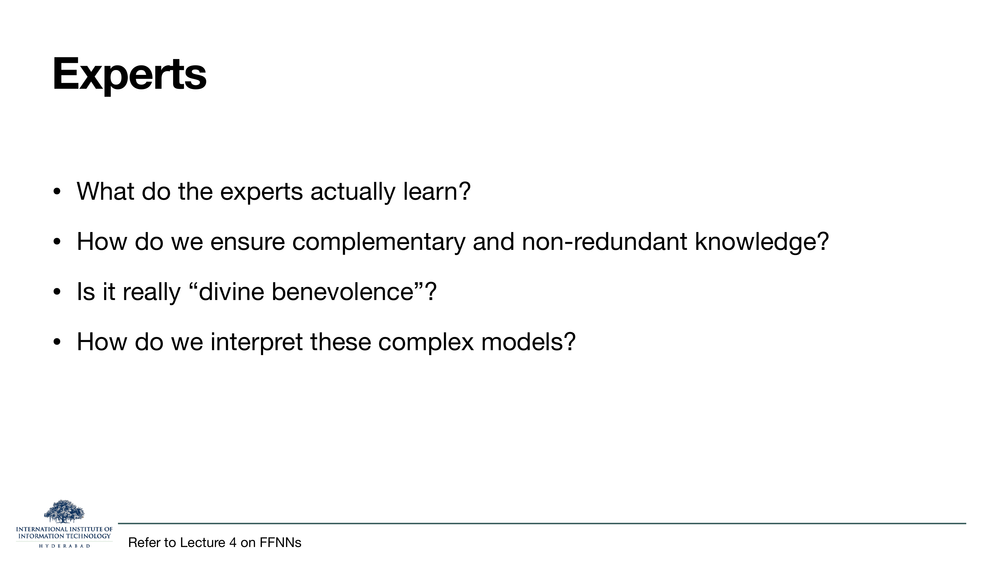
slide 32 · four open questions about experts
On the slide
Four questions that don't have clean answers. What do experts learn? How do we make sure they
specialise on different things (not all learning the same thing)? Is expert-training really as
mysterious as Shazeer's "divine benevolence" line suggests? And can we interpret what any given
expert has learned?
Why these are honest questions
The MoE community understands routing and load-balancing well, but the question of "what did expert
#47 learn" is genuinely open. Some experts have interpretable specialisations (see slide 35), but
most do not — they end up as generic feature extractors that don't correspond to any human category.
The next few slides show what the interpretable ones look like.
Slide 33 / 58
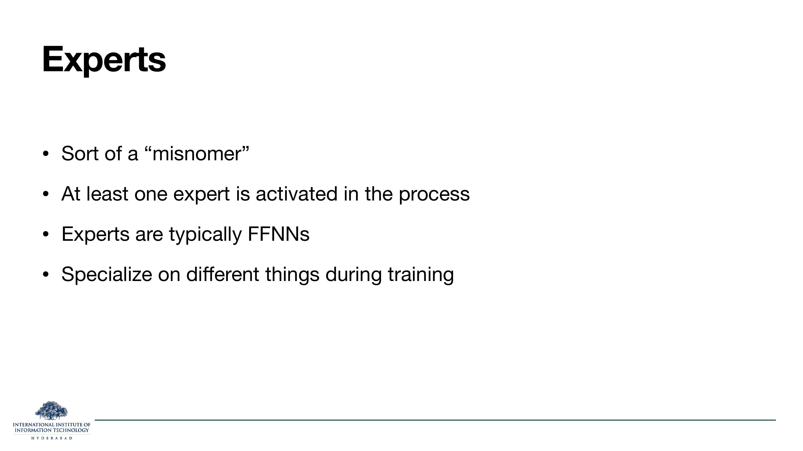
slide 33 · four honest sentences about experts
On the slide
Four blunt clarifications: (1) "expert" is a misnomer — nobody hand-designs them; (2) at least one
expert always runs (top-K with K ≥ 1); (3) each expert is just a plain FFNN; (4) specialisation is
emergent, not enforced.
Why bullet 2 matters
You can't have K = 0 — a token has to go somewhere. The choice is usually K = 1
(Switch Transformer's "hard routing"), K = 2 (GShard, Mixtral, Grok), or larger K (up to 8 in
DeepSeek). Larger K gives more parameter usage per token and more stable training but higher
inference cost. K = 1 gives maximum sparsity but is the hardest to train stably.
Slide 34 / 58
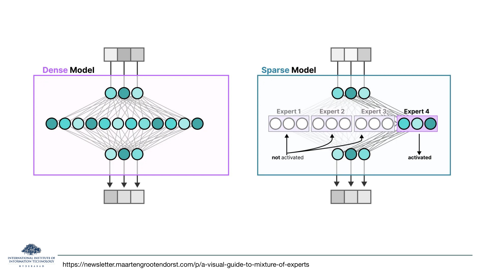
slide 34 · dense vs sparse, at the neuron level
On the slide
The dense-vs-sparse comparison zoomed all the way in. Left: a plain FFN — all hidden neurons run for
every input. Right: the same neurons split into 4 experts (groups), only one of which is activated
per input.
What to take from it
MoE isn't inventing new neurons; it's grouping existing neurons and adding a router that
picks one group. The total parameter count is (roughly) the same as a dense FFN with the same total
hidden width — but only one group's worth of computation runs per token. So "more experts" is
literally "same neurons, split into more groups, one group active per token".
Slide 35 / 58
![Table titled 'Expert specialization', from Zoph et al. 2022 (ST-MoE). Rows: Sentinel tokens (layers 1, 4, 6); Punctuation (layers 2, 6 — routed tokens include commas, colons, semicolons, dashes); Conjunctions and articles (layers 3, 6 — 'the the the the the', 'a and and and and'); Verbs (layer 1 — 'died falling identified fell closed left posted lost'); Visual descriptions with color and spatial position (layer 0 — 'her over her know dark upper dark outer center upper blue inner yellow'); Proper names (layer 1 — 'A Mart Gr Mart Kent Med Cor Tri Ca Mart R Mart Lorraine Colin Ken Sam'); Counting and numbers (layer 1 — '37 19. 6. 27 Seven 25 4, 54').](../assets/slides/L8-feed-forward/slide-35.png)
slide 35 · what experts specialise on (Zoph et al., 2022)
On the slide
A landmark result from the ST-MoE paper (Zoph, Bello, Fedus and others, 2022). They looked at what
tokens each expert was receiving after training and found clean, interpretable specialisations:
punctuation experts, verb experts, number experts, proper-name experts, colour-and-spatial-descriptor
experts. The specialisations show up at different depths — some are shallow (verbs at layer 1),
others deep (punctuation at layer 6).
Why this is exciting and misleading
Exciting because it validates the whole MoE premise — experts really do learn to specialise, and the
specialisations are the kind of linguistic categories a human would recognise. Misleading because
these are the cleanest examples cherry-picked from many experts; most experts don't
correspond to any single linguistic category. The paper's own message is that specialisation is real
but partial — the model doesn't cleanly decompose into "one expert per topic".
Slide 36 / 58
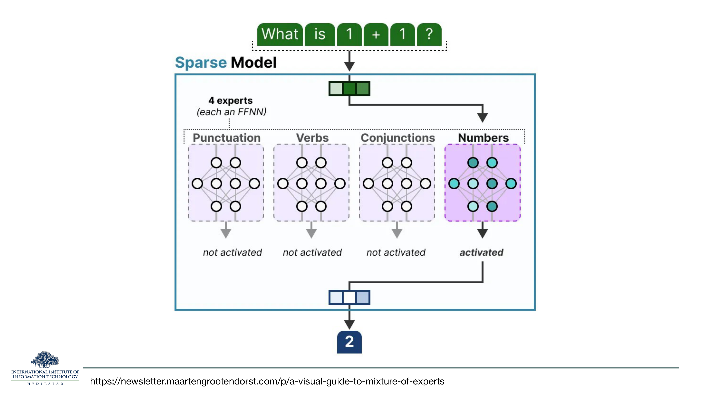
slide 36 · a toy example of expert selection
On the slide
Cartoon of the specialisation from slide 35 in action. The input is "What is 1 + 1 ?"; the router
sees a number-heavy prompt and routes to the "Numbers" expert; that expert produces "2".
How literal to take this
Not very. Real MoE routing decisions are made per token, not per sequence, and the "Numbers expert"
in slide 35 handles individual number tokens, not "arithmetic questions" as a whole. But the cartoon
is a fair mental model of what MoE is trying to achieve: send each token to the expert whose learned
specialisation matches it best.
Slide 37 / 58

slide 37 · DeepSeek MoE — full block
On the slide
The complete DeepSeek V2/V3 block, showing MoE and Multi-Head Latent Attention (MLA) together. The
FFN is replaced by a mixture of two kinds of experts: shared (green, always active) and
routed (blue, chosen by a router). MLA (bottom) is a separate innovation that compresses
the KV cache; we're focused on the top-right box.
What to notice
DeepSeek's design has two kinds of experts — a small pool of shared experts that always
run, and a large pool of routed experts that fire selectively. The shared experts absorb generic
computations (grammar, common patterns) so the routed experts can specialise on the harder cases.
Zoom in on the next slide.
Slide 38 / 58
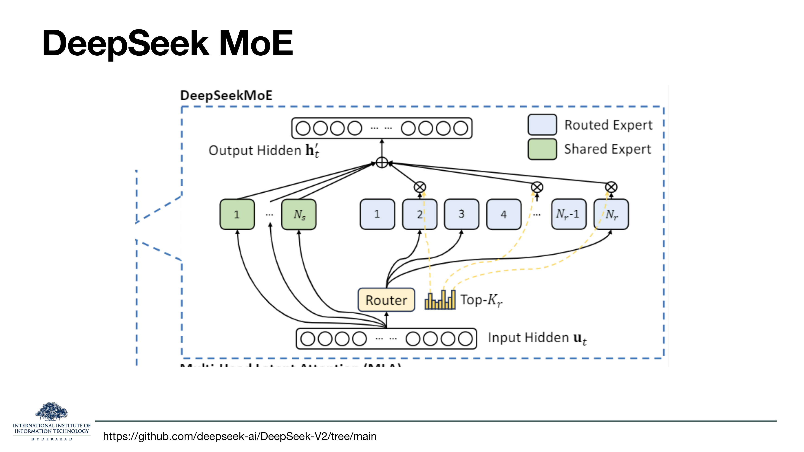
slide 38 · DeepSeek MoE — the routing box, close up
On the slide
Zoom of the MoE box. Shared experts (green,
Ns) all run every time. Routed experts (blue, Nr) have a
score computed by the router; only the top Kr fire, weighted by their scores,
and their outputs are summed with the shared experts' output.
Why shared experts help
Without shared experts, every routed expert has to learn some common baseline knowledge — every
expert needs to know how to handle punctuation, common function words, etc. That's wasteful
(redundancy across experts) and destabilising (a token routed to a poorly-trained expert produces
garbage). Shared experts pull that common knowledge into a always-on module, freeing the routed
experts to actually specialise.
✦ Key takeaway
Shared + routed is a form of curriculum: shared experts do the easy work, routed experts
are free to be weird. It's a small architectural change with a large training-stability payoff.
Slide 39 / 58
![Three MoE layout designs shown side by side. (a) Conventional Top-2 Routing: router picks K=2 of N experts. (b) + Fine-grained Expert Segmentation: each of the N experts is split into two smaller ones (now 2N experts total), and K=4 are chosen — same active parameters, more granularity. (c) + Shared Experts Isolation (DeepSeekMoE): one of the small experts is always active as a shared expert (green), and K=3 of the remaining routed experts are picked. Caption: 'Smaller (size), larger (count) number of routed experts + a few shared experts that are always on.'](../assets/slides/L8-feed-forward/slide-39.png)
slide 39 · three generations of MoE design
On the slide
The evolution of MoE routing in one figure. (a) is the classical top-2 setup from GShard. (b) is
Shazeer's fine-grained variant: instead of N big experts pick top-2, you split each expert
in half to get 2N smaller experts and pick top-4. Same active parameters, more granularity.
(c) is DeepSeek's addition on top: one expert becomes a shared always-on module.
Why fine-grained wins
Combinatorially. Choosing 4 out of 2N experts gives many more possible "team combinations"
than choosing 2 out of N. So each token has richer specialisation, without changing the
per-token compute. The trade-off is more routing overhead (the router now has to score 2N
experts instead of N) — but routing is cheap compared to the FFN itself, so it's essentially
free.
→ Trend to watch
Modern MoE models keep pushing this: DeepSeek V3 has 256 routed experts + 1 shared, Qwen 3.5 has
512, and the general direction is "even smaller, even more numerous". The limit is set by memory
bandwidth — at some point the router itself becomes the bottleneck.
§7Routing: how does a token pick an expert?
Slides 40–51 dig into the router — the second MoE
ingredient and the hardest one to train. Three algorithms
are covered: hash routing (fixed hash function,
mostly academic), top-K routing (learnable, the
current standard), and reinforcement learning routing
(used in early MoE work, mostly abandoned). Then the
familiar failure mode: without care, the same handful of
experts get all the tokens.
Slide 40 / 58
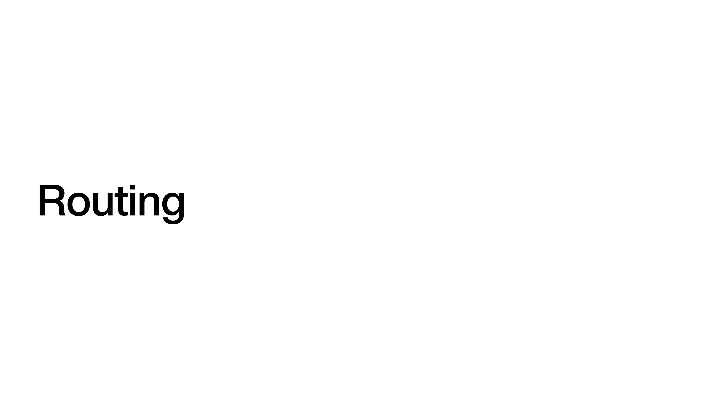
slide 40 · section marker — Routing
On the slide
Section break. The next twelve slides are about how the router works, how it's trained, and how it
fails.
Slide 41 / 58
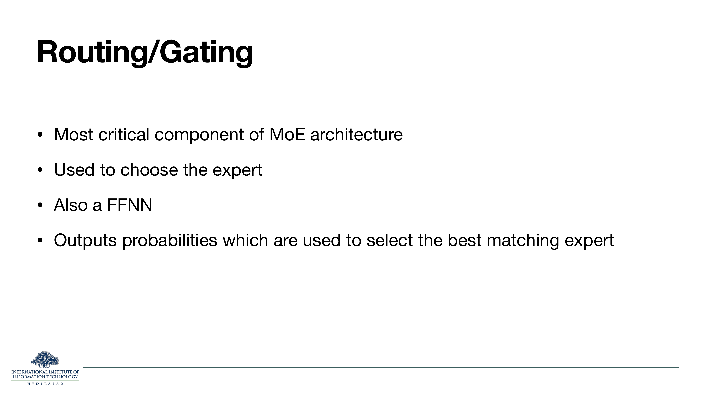
slide 41 · the router, in four bullets
On the slide
Four claims: the router is the most important MoE component, it picks the expert, it's itself an
FFNN, and it outputs a probability distribution over experts.
Why "most critical"
Experts are ordinary FFNs — you can't really design them wrong. Load balancing is one loss term. But
the router has to make a discrete choice (which expert?) using continuous gradients, has to spread
tokens roughly evenly across experts, and has to converge to a stable routing policy without
collapsing into "always send everyone to expert #3". Get any of those wrong and the whole MoE trains
badly. So the router is where the technical trickiness lives.
Slide 42 / 58
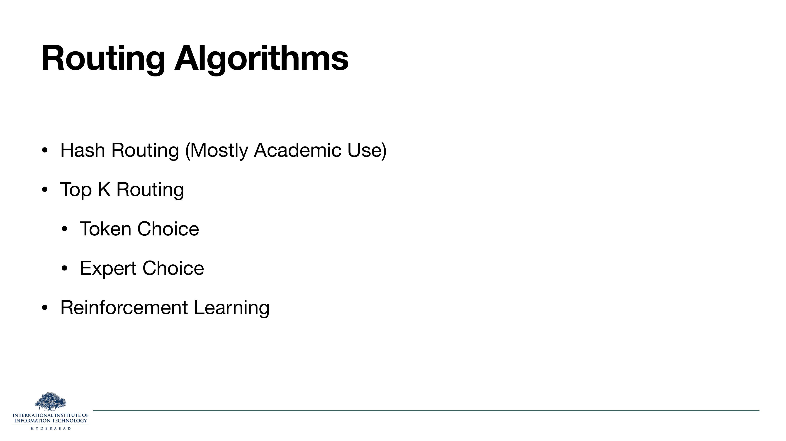
slide 42 · the three families of routing algorithm
On the slide
A map of the routing landscape. Three families: hash routing (deterministic, non-learned), top-K
routing (learned, dominates production), and reinforcement-learning routing (learned by policy
gradient, mostly historical).
What the sub-bullets under Top-K mean
Top-K comes in two flavours: Token Choice (each token picks its K favourite experts) and
Expert Choice (each expert picks its favourite tokens, up to a fixed capacity). The two are
duals of each other — one is the transpose of the other. Slide 45 has the picture.
Slide 43 / 58
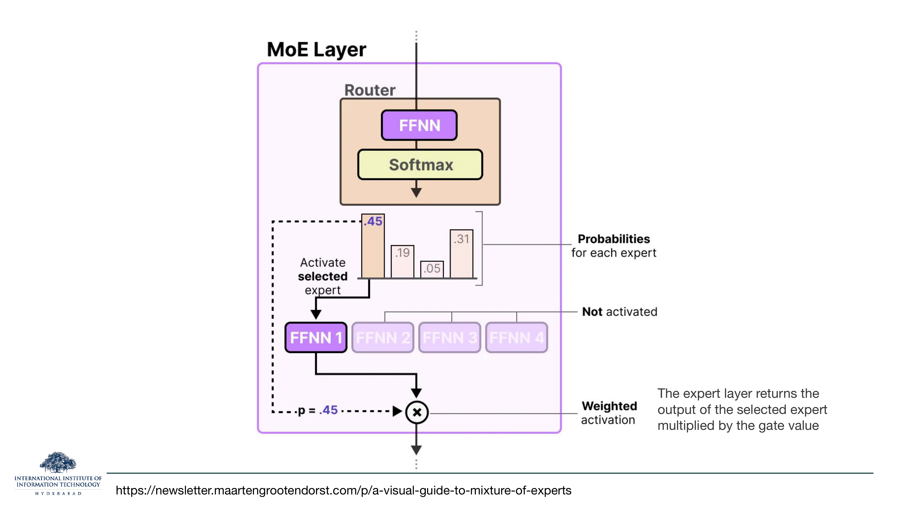
slide 43 · what a router actually looks like
On the slide
A single MoE layer, drawn in detail. The router is a tiny FFNN + softmax. It outputs a probability
distribution over the N experts (e.g., .45, .19, .05, .31 for four experts). The expert with
the highest score (FFNN 1, p = .45) runs; its output is multiplied by that gate value (0.45) before
being emitted.
Why we multiply by the gate value
Two reasons. First, it lets the router's gradients flow back through the multiplication — the router
gets a training signal proportional to how well its chosen expert performed. Second, it acts as a
soft weighting: an expert chosen with p = 0.9 contributes more strongly than one chosen with p = 0.4,
which is a mild regularisation on the router's confidence.
Slide 44 / 58
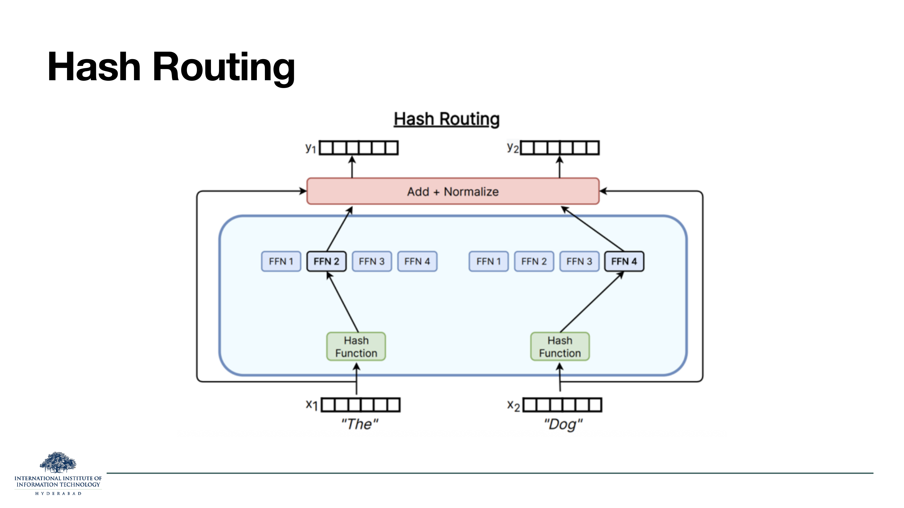
FFN 2; 'Dog' -> FFN 4. The selected expert produces the output that flows into Add + Normalize.">
slide 44 · hash routing — the non-learned baseline
On the slide
Hash routing. Each token's identity is passed through a fixed hash function, and the hash chooses
the expert. No learning involved.
Why it works, and why it's still not used
Because good hash functions distribute inputs evenly, hash routing automatically load-balances — no
auxiliary loss needed. It's a nice sanity check that MoE can work at all even with a stupid router.
But because the routing is fixed, experts can't specialise on meaning — the token "bank"
(river vs financial) will always go to the same expert regardless of context, wasting the whole
point of MoE. Hash routing appears in academic papers as a strong baseline; production MoE always
uses learned routing.
Slide 45 / 58
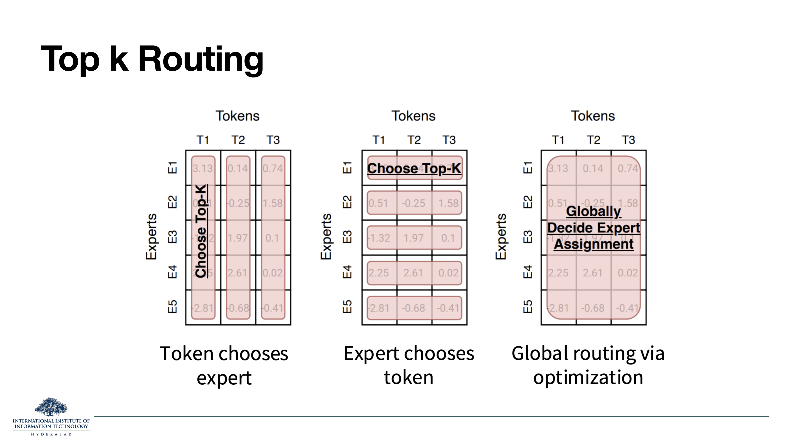
slide 45 · three flavours of Top-K routing
On the slide
The router produces a score matrix: rows are experts, columns are tokens. Three ways to pick who
goes where:
- (a) Token chooses expert: for each token (column), take the top-K experts by
score. The classic Switch/GShard approach.
- (b) Expert chooses token: for each expert (row), take the top-K tokens by score,
up to that expert's capacity. Guarantees each expert gets exactly the same number of tokens.
- (c) Global routing via optimisation: solve the full assignment problem across all
tokens and experts jointly (e.g., balanced Sinkhorn assignment).
Trade-offs
(a) is what most models use — simple, fast, but requires an explicit load-balancing loss to prevent
expert collapse. (b) automatically balances the load but can drop tokens (if too many tokens want
the same expert, some are ignored). (c) has the best balance but adds an optimisation step in the
forward pass, which is expensive and hard to parallelise. In practice (a) with a good aux loss wins
on ease of implementation.
Slide 46 / 58
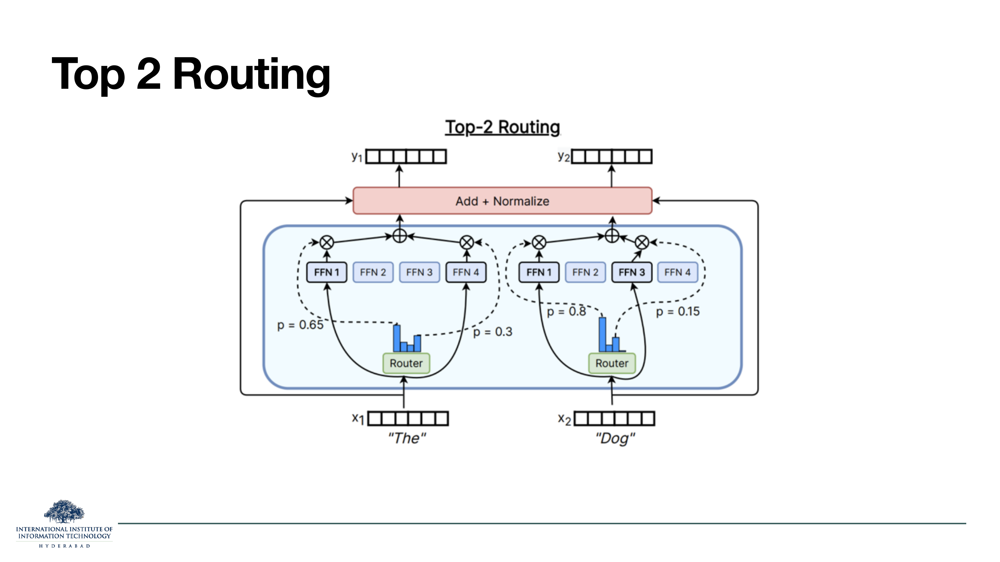
slide 46 · top-2 routing in action
On the slide
The most common concrete instance. For each token, the top 2 experts by router score both run; their
outputs are weighted by their router probabilities and summed. This is the GShard / Mixtral scheme.
Why K = 2 specifically
K = 1 (Switch Transformer) is the simplest but hardest to stabilise — a single bad routing decision
wastes the whole token. K = 2 gives each token a "backup" expert whose gradient still flows, which
stabilises training substantially. K > 2 gives diminishing returns because you spend more compute
for smaller quality gains. So K = 2 hit a sweet spot for years. DeepSeek's fine-grained approach
pushes K higher (up to 8) but only because the experts themselves are much smaller — the total active
parameter count stays comparable.
Slide 47 / 58
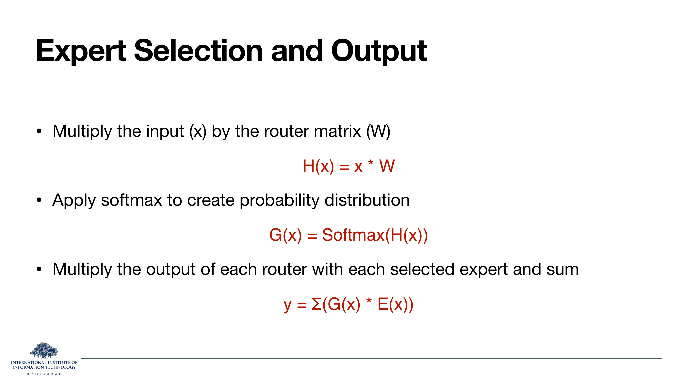
slide 47 · the router in three formulas
On the slide
The router's forward pass, written down. H(x) = xW is the raw score
vector. G(x) = Softmax(H(x)) is the probability distribution.
y = ∑ G(x) · E(x) is the final output — sum of expert
outputs weighted by router probabilities.
Where top-K enters
These formulas describe the dense mixture — if you actually ran all experts and combined
them, that's what you'd get. Top-K routing modifies step 3 to sum only over the top-K experts,
zeroing the rest. That's the actual compute saving: you don't run E(x) for
experts that got low router scores.
Slide 48 / 58
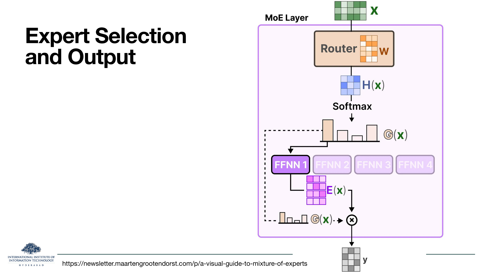
Router W (small matrix) -> raw scores H(x) -> Softmax -> gate distribution G(x) (bar chart). The top expert (FFNN 1) is highlighted; FFNN 2, 3, 4 are dimmed. FFNN 1's activation E(x) is multiplied element-wise by the top gate value and the result y is emitted.">
slide 48 · the router in a diagram
On the slide
The formulas from slide 47, drawn as boxes. Input matrix x → router weights W →
raw scores H(x) → softmax → gates G(x) → element-wise
multiplication with the selected expert's output E(x) → final y.
Why this picture is worth staring at
All the interesting design decisions in MoE compress into the little bar chart in the middle. Is
the top gate very confident (a spiked bar)? Then routing is stable and one expert dominates. Is the
distribution flat? Then routing is uncertain and you're paying for compute you can't use well. Load
balancing loss (§8) is essentially "make the average of these bar charts, across the batch, look
uniform".
Slide 49 / 58
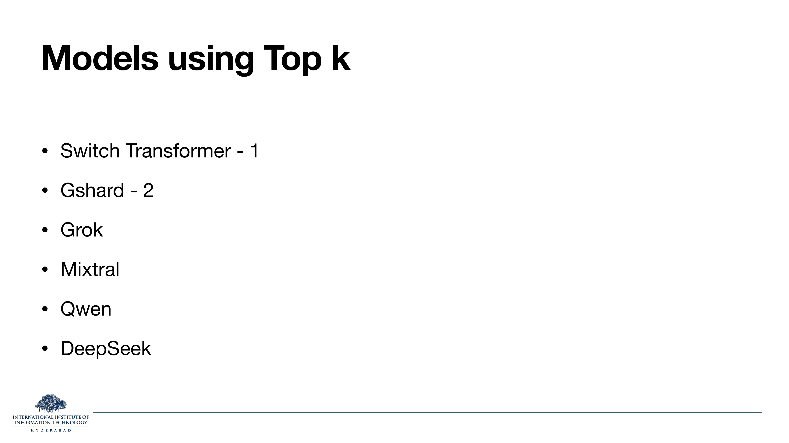
slide 49 · who uses what
On the slide
Real models and their K values. Switch Transformer picks 1 expert per token; GShard picks 2. Grok,
Mixtral, Qwen, DeepSeek all use top-K variants.
What this tells you
The top-K family owns production MoE. Every model on the slide uses learned, per-token, top-K
routing — no exceptions. Hash routing and RL routing are not on this list. The next slide is one of
those rare "wait, RL routing existed?" moments.
Slide 50 / 58
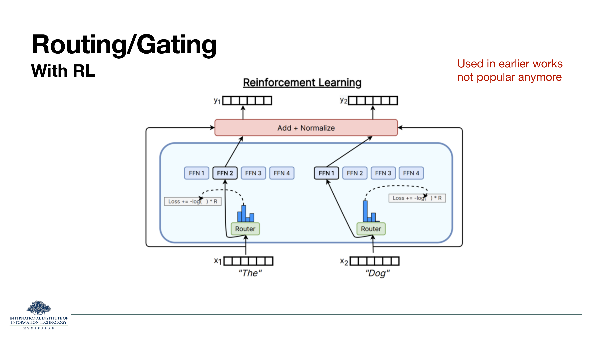
slide 50 · RL routing — the abandoned road
On the slide
Reinforcement-learning routing. The router picks one expert (a hard, discrete choice), the network
computes its loss, and that loss is fed back to the router as a reward using a
log-likelihood-times-reward gradient — REINFORCE, essentially. Note the label in the top right: "used
in earlier works, not popular anymore".
Why it fell out of favour
Because REINFORCE gradients are noisy — the router gets a scalar reward per token and has to figure
out which of its many possible actions was the right one. That's a hard credit-assignment problem
and it makes MoE training very slow. Top-K with a softmax gate is trained end-to-end with dense
gradients (through the gate value), which is orders of magnitude more sample-efficient. Once the
community figured out that trick, RL routing was retired.
Slide 51 / 58
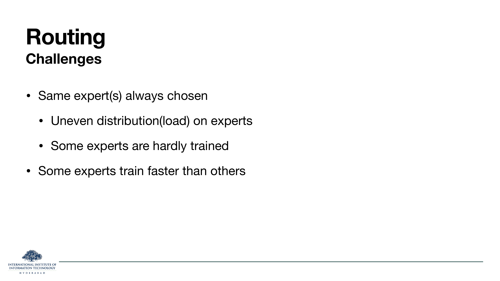
slide 51 · what goes wrong with vanilla routing
On the slide
The classic MoE failure mode. Without any intervention, top-K routing tends to collapse: a handful
of experts win the initial routing scores, receive most of the training signal, become better at
the task, get chosen even more, and so on — a positive feedback loop that leaves most experts
starved and untrained.
Why this happens
The router is trained to send tokens to the expert that will give the lowest loss. Early in
training, one expert is randomly better than the others, so it gets picked more, so its gradient
signal is stronger, so it improves faster, so it gets picked even more. Meanwhile the losers get
no training signal because they don't run. The system converges to using ~1 expert regardless of
how many were defined. §8 is the entire fix for this — the auxiliary load-balancing loss.
⚠ Watch out
If you build an MoE and forget to add a load-balancing loss, it will train to something that looks
superficially fine but is really just a dense model in disguise. Always check expert utilisation
during training.
§8Load balancing: keeping every expert busy
Slides 52–56 are the fix for the collapse from slide 51.
Three techniques: adding Gaussian noise to router scores
(make the top-K decision noisy so losers occasionally win),
switching from "token chooses expert" to "expert chooses
token" (forces even distribution), and adding an auxiliary
loss that penalises uneven expert usage.
Slide 52 / 58
slide 52 · section marker — Load Balancing
On the slide
Section break. The last five slides of the MoE arc are all load balancing.
Slide 53 / 58
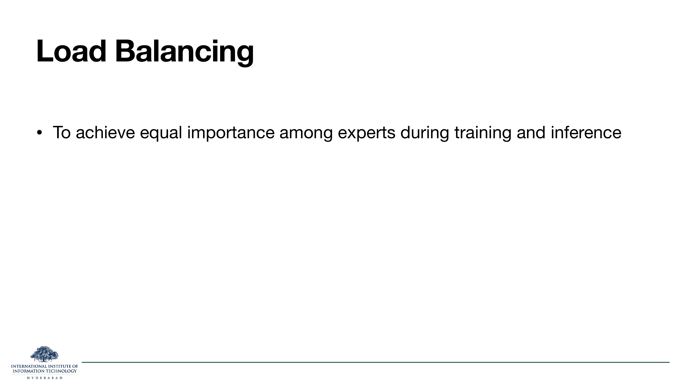
slide 53 · the load-balancing goal
On the slide
One sentence: we want each expert to be used roughly equally, both during training (so each expert
gets enough gradient) and inference (so each expert's compute contributes to the answer, and
hardware isn't idle waiting on one over-loaded expert).
What "equal" means in practice
Not exactly uniform. Some experts genuinely handle harder or rarer inputs; a slightly uneven
distribution is fine. What you're really trying to prevent is the pathological case from slide 51 —
one expert doing all the work, the others essentially unused. A common target is that the most-used
expert should get at most 3-4× the tokens of the least-used one.
Slide 54 / 58
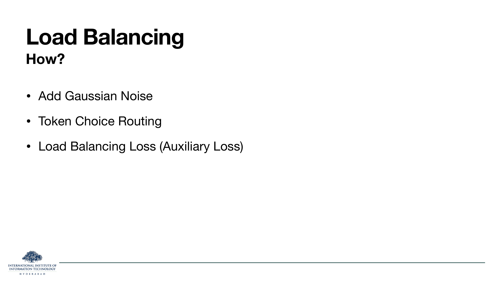
slide 54 · three ways to enforce balance
On the slide
Three balancing techniques, in increasing sophistication:
- Add Gaussian noise to router scores. This is called noisy top-K. It gives
losing experts an occasional lucky win, breaking the winner-take-all feedback loop.
- Token Choice / Expert Choice Routing. Expert Choice (from slide 45) automatically
balances because each expert takes a fixed capacity of tokens.
- Auxiliary Loss. Add a loss term to the total training loss that penalises uneven
expert usage. Slide 56 makes this precise.
Modern MoE uses all three, but the auxiliary loss is the workhorse — it does the majority of the
balancing.
Slide 55 / 58
![Slide titled Expert Capacity. Terminology: Experts split across devices, each with unique parameters and standard feed-forward computation. Expert Capacity: batch size of each expert, calculated as (tokens_per_batch / num_experts) × capacity_factor. Capacity Factor: used when calculating expert capacity — allows more buffer to help mitigate token overflow during routing. Two diagrams show three devices, each with one expert. Capacity Factor 1.0 (tight fit, some tokens dropped shown as red dashed arrow); Capacity Factor 1.5 (extra empty slots, no drops but across-device communication).](../assets/slides/L8-feed-forward/slide-55.png)
slide 55 · expert capacity and the capacity factor
On the slide
Two related terms.
- Expert capacity is the max number of tokens one expert can accept in a batch. If
more want to route to it, the excess get "dropped" (their FFN output is just the identity — they
skip the FFN altogether).
- Capacity factor = how much headroom you allow. Capacity factor 1.0 means each
expert accepts exactly (batch tokens / num experts) — no headroom, uneven routing drops tokens.
Capacity factor 1.5 means 50% headroom — fewer drops, but each expert holds empty slots and hardware
is under-utilised.
The trade-off in a picture
Left panel (capacity factor 1.0): tight; one token gets dropped (red dashed arrow) because its
preferred expert is already full. Right panel (capacity factor 1.5): looser; no drops, but two
devices have empty slots. This is a hardware-level knob: cranking capacity factor higher wastes
compute but avoids drops; lowering it saves compute but loses information.
Slide 56 / 58
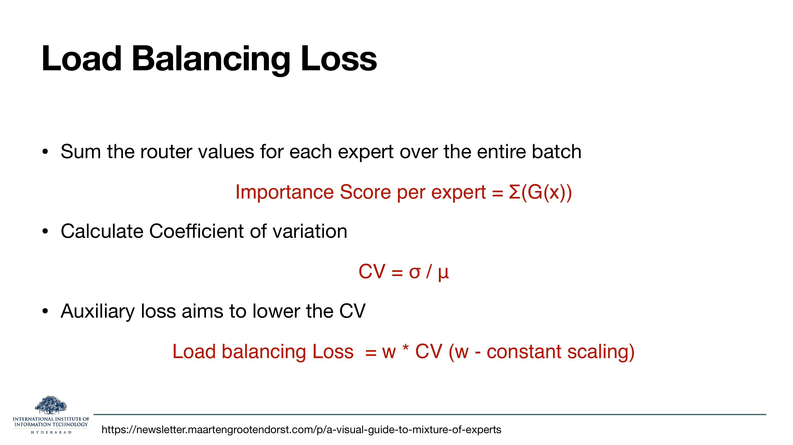
slide 56 · the auxiliary load-balancing loss
On the slide
The concrete formula. Three steps:
- For each expert, sum the router probabilities across the batch — call this the importance
score of that expert.
- Compute the coefficient of variation
of these importance scores. High CV = uneven usage. Low CV = balanced usage.
- Add w · CV to the total training loss, for some small scaling constant w.
Why this specific formula
The coefficient of variation is a scale-invariant measure of dispersion — it doesn't matter whether
your importance scores are on the order of 100 or 106, the CV captures how relatively
uneven they are. So the same loss weight works across model sizes without re-tuning. The
constant w is typically 0.01–0.1 — small enough not to dominate the main task loss, big
enough to keep the router balanced. If you set w too high the router just spreads tokens
uniformly regardless of the actual task, and specialisation dies.
✦ Key takeaway
All of load balancing is one auxiliary loss term. It's a two-line change to the training code and
it's the difference between an MoE that trains and an MoE that collapses to one expert.
§9The FFN landscape today
Two closing slides. A historical table of what activation
and layer type each big transformer used (2017 → 2025), then
a 2026 snapshot showing where things are now: MoE
everywhere, active parameters an order of magnitude below
total parameters, and Kimi K3's SiTU-GLU already in the
table.
Slide 57 / 58
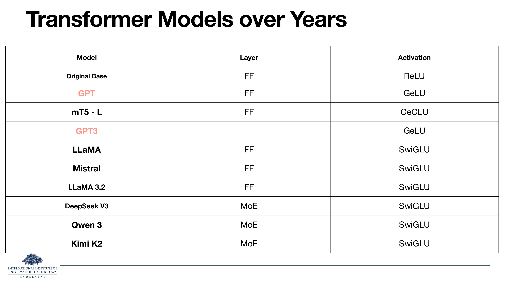
slide 57 · the evolution of FFN choices, one row per model
On the slide
Ten famous transformers, each labelled with its layer type (FF vs MoE) and its activation function.
Read down the column and you can trace the whole story of this lecture.
What to notice
- Activations went ReLU → GELU → GLU-family (GeGLU, SwiGLU). SwiGLU has been the
consensus choice since LLaMA (2023).
- Layer type went FF → MoE. All three of the most recent models on the list
(DeepSeek V3, Qwen 3, Kimi K2) are MoE.
- Nobody uses ReLU any more. The 2017 default has been retired.
Every one of these transitions was covered in this lecture. If you understand this table, you
understand what the lecture is about.
Slide 58 / 58
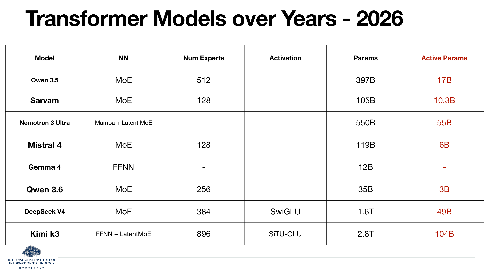
slide 58 · the 2026 snapshot
On the slide
The equivalent table for 2026. Eight of the most recent big models, with total parameters and (in red)
active parameters per token. Kimi K3's SiTU-GLU is on the last row.
What to take from it
- The ratio of total-to-active parameters is dramatic — 1.6T / 49B for DeepSeek V4 is a ~33×
compression at inference; 2.8T / 104B for Kimi K3 is ~27×. This is the MoE bet, taken to its logical
conclusion.
- Expert counts have exploded. Kimi K3 has 896 experts per layer, Qwen 3.5 has 512. Compare to
Switch Transformer (2021)'s 128.
- Gemma 4 is a lonely dense model in a MoE-dominated table — presumably a deliberate choice for
edge / on-device deployment, where memory bandwidth is more precious than compute.
- Kimi K3's SiTU-GLU is the newest data point in the deck. It's already competing with SwiGLU as
the default gated activation.
→ Where the field is going
Two directions from here. First, fine-grained MoE keeps growing — expect models with thousands of
tiny experts in the next year. Second, activation functions are being redesigned specifically for
low-precision inference (SiTU-GLU is the first example). Both are FFN-block innovations. Every
other part of the transformer is roughly stable in 2026; the FFN is the only sub-layer still
evolving fast. Which is why this lecture is so long.
Zoom out. The FFN is the single largest chunk of a
transformer and it does the model's actual thinking. The
2017 recipe — two dense linear layers with a ReLU — has
been progressively upgraded: gated (SwiGLU family), soft-capped
(SiTU-GLU), and then split into sparsely-activated experts
(MoE). Every big model in production today is the composition
of these three moves: SwiGLU-flavoured gates, applied inside
MoE-style expert FFNs, with careful load balancing so the
router doesn't collapse. Once you understand this stack,
you can read almost any new frontier-model paper on
publication day.